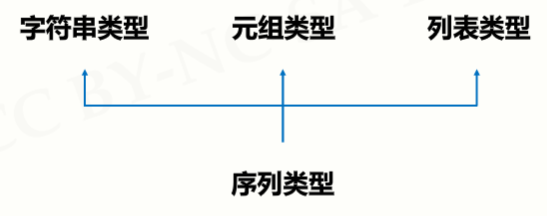
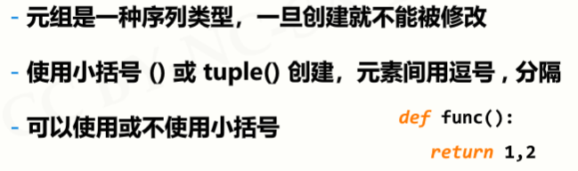
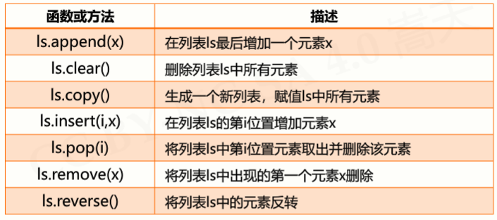
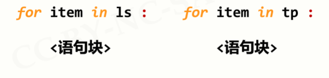
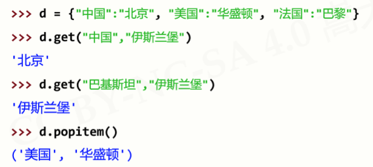

原文连接:https://www.cnblogs.com/wlrblog/p/PythonStudySix.html
Python学习笔记（六）—— 集合类型及操作
一、集合类型及操作
1、集合类型定义
- 集合是多个元素的无序组合
例子：
2、集合操作符
3、集合处理方法
4、集合类型应用场景
4.1 包含关系比较
4.2 数据去重：集合类型所有元素无重复
二、序列类型及操作
1、序列类型定义
- 序列是具有先后关系的一组元素

2、序列处理函数及方法
2.1 序列类型通用操作符
eg：

2.2 序列类型通用函数和方法
eg：
3、元组类型及操作
- 元祖是序列类型的一种扩展

eg：
` - 元组继承序列类型的全部通用操作

4、列表类型及操作
- 列表是序列类型的一种扩展，十分常用
- 列表类型操作函数和方法
eg：

eg:
- 常用列表功能
5、序列类型应用场景
5.1 元素遍历

5.2 数据保护
三、字典类型及操作
1、字典类型定义
- 映射：是一种键(索引)和值(数据)的对应
eg：
2、字典处理函数及方法
eg：
eg：

- 字典常用功能

3、字典类型应用场景
- 元素遍历

四、jieba库
1、概述：jieba 是优秀的中文分词第三方库
2、jieba分词的三种模式
3、jieba库常用函数
五、实例分析
1、基本统计值计算：总个数、求和、平均值、方差、中位数...
- 方法：
代码：
- #CalStatisticsV1.py
- def getNum(): #获取用户不定长度的输入
- nums = []
- iNumStr = input("请输入数字(回车退出): ")
- while iNumStr != "":
- nums.append(eval(iNumStr))
- iNumStr = input("请输入数字(回车退出): ")
- return nums
- def mean(numbers): #计算平均值
- s = 0.0
- for num in numbers:
- s = s + num
- return s / len(numbers)
- def dev(numbers, mean): #计算方差
- sdev = 0.0
- for num in numbers:
- sdev = sdev + (num - mean)**2
- return pow(sdev / (len(numbers)-1), 0.5)
- def median(numbers): #计算中位数
- sorted(numbers)
- size = len(numbers)
- if size % 2 == 0:
- med = (numbers[size//2-1] + numbers[size//2])/2
- else:
- med = numbers[size//2]
- return med
- n = getNum() #主体函数
- m = mean(n)
- print("平均值:{},方差:{:.2},中位数:{}.".format(m, dev(n,m),median(n)))
2、文本词频统计

- 统计英文文本
代码：
- #CalHamletV1.py
- def getText():
- txt = open("hamlet.txt", "r").read()
- txt = txt.lower()
- for ch in '!"#$%&()*+,-./:;<=>?@[\\]^_‘{|}~':
- txt = txt.replace(ch, " ") #将文本中特殊字符替换为空格
- return txt
- hamletTxt = getText()
- words = hamletTxt.split()
- counts = {}
- for word in words:
- counts[word] = counts.get(word,0) + 1
- items = list(counts.items())
- items.sort(key=lambda x:x[1], reverse=True)
- for i in range(10):
- word, count = items[i]
- print ("{0:<10}{1:>5}".format(word, count))
运行结果：
- 统计中文文本
代码：
- #CalThreeKingdomsV1.py
- import jieba
- txt = open("threekingdoms.txt", "r", encoding='utf-8').read()
- words = jieba.lcut(txt)
- counts = {}
- for word in words:
- if len(word) == 1:
- continue
- else:
- counts[word] = counts.get(word,0) + 1
- items = list(counts.items())
- items.sort(key=lambda x:x[1], reverse=True)
- for i in range(15):
- word, count = items[i]
- print ("{0:<10}{1:>5}".format(word, count))
运行结果：
进一步优化
代码：
- #CalThreeKingdomsV2.py
- import jieba
- excludes = {"将军","却说","荆州","二人","不可","不能","如此"}
- txt = open("threekingdoms.txt", "r", encoding='utf-8').read()
- words = jieba.lcut(txt)
- counts = {}
- for word in words:
- if len(word) == 1:
- continue
- elif word == "诸葛亮" or word == "孔明曰":
- rword = "孔明"
- elif word == "关公" or word == "云长":
- rword = "关羽"
- elif word == "玄德" or word == "玄德曰":
- rword = "刘备"
- elif word == "孟德" or word == "丞相":
- rword = "曹操"
- else:
- rword = word
- counts[rword] = counts.get(rword,0) + 1
- for word in excludes:
- del counts[word]
- items = list(counts.items())
- items.sort(key=lambda x:x[1], reverse=True)
- for i in range(10):
- word, count = items[i]
- print ("{0:<10}{1:>5}".format(word, count))
运行结果：